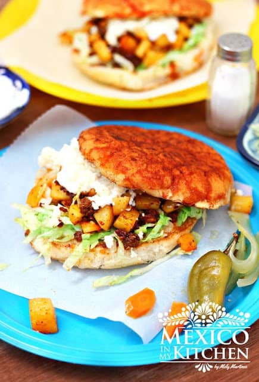

Pambazo Mexicano

Description
In Mexico City, a “Pambazo” is a sandwich made of a particular
type of bread stuffed with potatoes and chorizo and then drenched
in a guajillo sauce, served with lettuce, cheese, and cream.
Ingredients
- 2 ½ cups potatoes, diced
- guajillo peppers seeds, and veins removed
- chorizos 3 oz. each
- tablespoons vegetable oil
- garlic clove
- black peppercorns
- teaspoon Mexican oregano
- Teleras or Kaiser rolls sliced lengthwise
- ½ cup of shredded iceberg lettuce
- ¼ cup crumbled cheese
- 2 tablespoons Mexican cream
- Salt to taste
Steps
- Place the diced potatoes in a saucepan with hot water and cook over medium-high heat. It will take about 10-12 minutes for the potatoes to be cooked.
- Place the guajillo peppers in a bowl with hot water to soften while the potatoes are cooking.
- In the meantime, cook the chorizo in a skillet over medium-high heat. It will be ready in about 8 minutes.
- By this time the potatoes should be ready, so remove them from heat and drain. Next, stir them into the skillet with the chorizo, and keep cooking for three minutes. This is just enough time to allow the flavors to blend and the potatoes to get a little more tender. Set aside.
- Place guajillo peppers, 1 cup of soaking water, garlic clove, oregano, and peppercorns into a blender. Process until you have a smooth sauce. Strain and place in a bowl.
- Heat a griddle and add a ½ tablespoon of oil. Place the sliced rolls upside down and brush their tops all over with the Guajillo salsa. Flip the rolls so the tops get a little warm and crispy. This step will be about a minute per side. Repeat the process with the rest of the rolls, adding oil to the skillet as needed.
- To assemble the Pambazo, place some chorizo and potatoes on each toasted roll, then top with the shredded lettuce, cream, and cheese. Serve with a hot salsa or pickled jalapeños. Enjoy!